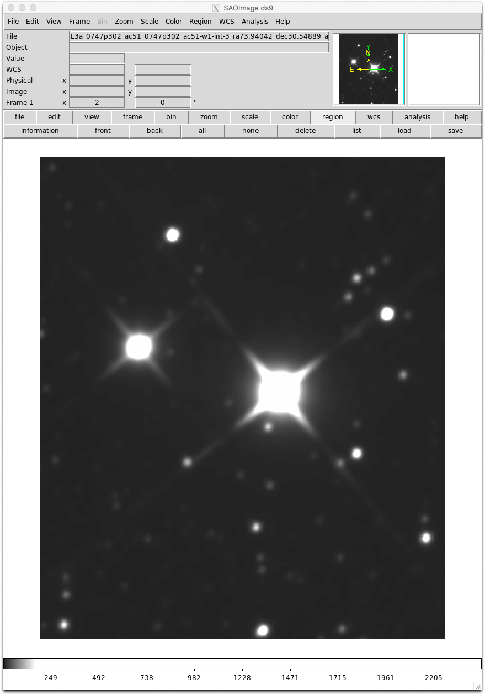
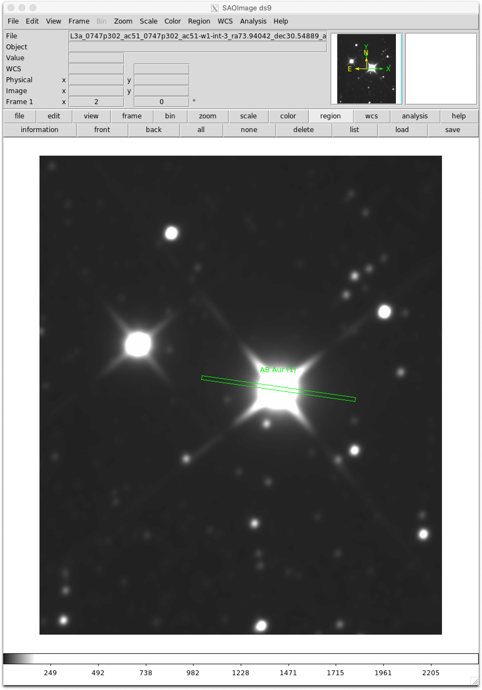

FORCAST Grism Spectra: Basic Inspection and Assessment
Aim: Inspection of grism data.
Data: Level 3 grism data of the Herbig Ae star, AB Aur (G063, G111, G227, and G329)
Tools: astropy, DS9
Instrument: FORCAST
Documentation: FORCAST data handbook
Notebook repository: https://github.com/SOFIAObservatory/Recipes
Goals
Read and inspect FORCAST grism data.
Overplot slit angle and position on image using DS9.
Masking regions with strong telluric features.
Plot Spectral Energy Distribution (SED).
Absolute flux calibration using independant photometry.
Conversion of flux from Jy to \(\lambda\)F\(_{\lambda}\).
Introduction
This recipe provides an overview and sample python code for plotting and assessing FORCAST grism data. The FORCAST observing modes are described in the SOFIA Observer’s Handbooks, available from the Proposing and Observing page on the SOFIA website; and the FORCAST data products are described in the FORCAST GO Data Handbook.
Imports
[1]:
# Imports
import numpy as np
import numpy.ma as ma
from astropy.io import fits
from astropy import constants as const
from astropy import units as u
from astropy.table import Column, Table
import matplotlib.pyplot as plt
# for interactive plots
%matplotlib inline
Ingredients
Level 3 (flux calibrated) FORCAST grism data (either CAL or CMB files) from the Infrared Science Archive (IRSA)
Sample Data (if desired): For the examples in this recipe, we use the calibrated data for AB Aur from program 05_0138 (PI: Shuping), flight 434. The dataset consists of four LEVEL 3 CMB files, one file for each grism setting (G063, G111, G227, and G329), which can be downloaded from the IRSA using the following search parameters: - Coordinates or Object Name = AB Aur - Radius = 100 arcseconds - MissionID = 2017-09-27_FO_F434 - PlanID = 05_0138 - Instrument = FORCAST - Configuration = Low Resolution Spectroscopy - Processing State = LEVEL 3 The four files should be saved with their original names in a folder named “forcast-sample-data” in the same directory as this Python Notebook: - forcast-sample-data/F0434_FO_GRI_0501381_FORG063_CMB_0228-0229.fits - forcast-sample-data/F0434_FO_GRI_0501382_FORG111_CMB_0234-0238.fits - forcast-sample-data/F0434_FO_GRI_0501383_FORG227_CMB_0230-0233.fits - forcast-sample-data/F0434_FO_GRI_0501384_FORG329_CMB_0239-0246.fits You can download the example data directlyhere.
FORCAST GO Handbook for reference (latest version can be found on the SOFIA Data Products page.)
FORCAST data
Raw FORCAST data suffers from several instrumental artifacts. Nearly all of the artifacts are removed or corrected by the FORCAST pipeline, including: bad pixels; the Droop effect; non-linear pixel response; and the “jailbar” effect. In addition, the grism pipeline extracts the one-dimensional spectra, applies both wavelength and flux calibration, and corrects for telluric absorption. For point sources, an “optimal extraction” algorithm is used, while for extended (non-point-like) sources, a standard summation over a fixed aperture is used (see recipe on custom extractions for additional information). See the FORCAST GO Data Handbook for details regarding the artifacts, pipeline algorithms, and the flux-calibration process.
Level 3 FORCAST grism data is written in FITS format as a 2-dimensional data array with a single header (for detailed description, see FORCAST GO Data Handbook). The data is in a 5 x N array, where N is the number of wavelength bins/samples, with the following convention: - The first line of the data array contains the wavelength (\(\mu\)m); - the second line contains the pipeline-reduced and flux calibrated spectrum (Jy); - the third line contains the uncertainty (Jy); - the fourth contains the adopted atmospheric transmission spectrum; - and the fifth contains the instrumental response used in the flux calibration process (Me-/s/Jy, where “Me-” is 10^6 electrons).
Each FORCAST grism file contains the spectrum for a specific grism, which is indicated in the name of the file, e.g. “FORG111” would be a file containing data for the 11.1 \(\mu\)m grism. The pipeline does not combine specta from different grisms, this is left to the user.
There are two data types for LEVEL 3 FORCAST grism data: 1. CAL files: flux calibrated results for each raw (LEVEL_1) data file. There can be multiple CAL files for a single AOR. 2. CMB files: if possible, multiple CAL files for a single AOR are coadded into a “combined” data file. Usually there is only one CMB file per AOR.
Except for the provenance, the two datatypes are identical and hence the procedures below are equally valid for both.
The “error” spectrum is for the statistical uncertainty only and does not reflect systematic uncertainties in the absolute flux, for example losses due to slit misalignment or poor image quality (see below). If absolute fluxes are required, it is highly recommended that additional imaging data are obtained at the same time in order to calibrate the grism spectra accurately.
Viewing the FITS Header
First we will read a FITS file for one of the grism observations, display the full header, and then pick out some important keyword values to display in a “summary” table.
[2]:
# first open the file...
g063_fits = fits.open("../example_data/FORCAST/F0434_FO_GRI_0501381_FORG063_CMB_0228-0229.fits")
# ...and get info
g063_fits.info()
Filename: ../example_data/FORCAST/F0434_FO_GRI_0501381_FORG063_CMB_0228-0229.fits
No. Name Ver Type Cards Dimensions Format
0 PRIMARY 1 PrimaryHDU 324 (242, 5) float64
You can see from the FITS file info that the file contains a single primary HDU with 5 x 242 element array containing the calibrated data. Now display the full header:
[3]:
# Now display FITS header in full:
g063_fits[0].header[0:30]
[3]:
SIMPLE = T / Written by IDL: Wed Nov 22 15:43:45 2017
BITPIX = -64 /Real*8 (double precision)
NAXIS = 2 /
NAXIS1 = 242 /
NAXIS2 = 5 /
ALTI_STA= 42984 / feet, aircraft altitude start das.ic1080_15hz.p
ALTI_END= 42993 / feet, aircraft altitude end das.ic1080_15hz.pre
AOR_ID = '05_0138_1' / Astronomical Observation Request Identifier
ASSC_AOR= '05_0138_1' / All input AOR-IDs
ATRNFILE= 'ATRAN_Models/atran_43K_35deg_4-50mum.sav' / ATRAN file
CALERR = 0.0237970 / Fractional flux calibration error
C2NC2 = F / pointing controlled without telescope nod
CHOPPING= T / chopping
CHPAMP1 = 30 / arcsec, chop amplitude on sky sma.sky_amplitude
CHPANGLE= -330 / deg, chop angle astro commanded (e.g. aor)
CHPANGLR= 330 / deg, chop angle requested of the obervatory
CHPCOORD= 0 / 0=SIRF 1=TARF 2=ERF
CHPNPOS = 2 / number of secondary mirror (chop) positions
CHPSETL = 26 / milliseconds allotted for chopper settle
DATASRC = 'astro ' / (DCS) data source
DATE-OBS= '2017-09-27T09:03:58.606' / observation start ccyy-mm-ddThh:mm:ss.s
DETBIAS = 1.73700 / detector bias
DETCHAN = 'SW ' / wavelength channel swc lwc
DETECTOR= 'As-010 ' / detector array
DETITIME= 17.9601 / detector integration time, discounts throwaways
DICHROIC= 'Mirror (swc)' / dichroic element
DITHER = F / dithers are in use
EPERADU = 136 / electrons per DN
FILENUM = '0228-0229' /
FILTER = 'G5-8 ' / filter configuration name
The header is quite large, so we might want to just pull out some keywords of interest:
[4]:
# And now pull out useful summary data from specific keywords:
keywords = [
"ALTI_STA",
"ALTI_END",
"AOR_ID ",
"CHPAMP1 ",
"DATE-OBS",
"MISSN-ID ",
"NODAMP ",
"OBJECT ",
"SKY_ANGL ",
"SKYMODE ",
"SLIT ",
"ZA_START ",
"ZA_END ",
"TELVPA ",
"NODSTYLE",
"TOTINT ",
"CALQUAL ",
"WCSQUAL ",
"DATAQUAL",
]
# Loop over keywords to print.
for kywd in keywords:
print(kywd, "=", g063_fits[0].header[kywd], "/", g063_fits[0].header.comments[kywd])
ALTI_STA = 42984 / feet, aircraft altitude start das.ic1080_15hz.p
ALTI_END = 42993 / feet, aircraft altitude end das.ic1080_15hz.pre
AOR_ID = 05_0138_1 / Astronomical Observation Request Identifier
CHPAMP1 = 30 / arcsec, chop amplitude on sky sma.sky_amplitude
DATE-OBS = 2017-09-27T09:03:58.606 / observation start ccyy-mm-ddThh:mm:ss.s
MISSN-ID = 2017-09-27_FO_F434 / mission id
NODAMP = 60 / arcsec nod amplitude
OBJECT = AB Aur (1) / name given by observer
SKY_ANGL = 261.527 / "up" on det from N, coords.pos.sibs.vpa
SKYMODE = NMC / sky patterning mode
SLIT = FOR_LS47 / slit
ZA_START = 35.3101 / zenith angle soo 90-coord.pos.sibs.alt
ZA_END = 34.9659 / zenith angle eoo
TELVPA = 261.527 / deg, SI VPA coord.pos.sibs_vpa
NODSTYLE = NMC / nod/chop style
TOTINT = 71.8406 / Total integration time (s) as specified in the
CALQUAL = NOMINAL / Calibration status
WCSQUAL = UNKNOWN / WCS validity
DATAQUAL = NOMINAL / QA status: see HISTORY
This list of keywords provides a nice summary of the observation. There are a few different keywords in the header for integration time(s); here we show TOTINT because it reflects the total on-source integration time (factoring in chop-nod style). This is the value that the GO should use to compare to the FORCAST integration time estimator. It is also important to take a look at the HISTORY cards to see a summary of the data pipelining and especially the QA notes, which are usually at the end of the HISTORY block:
[5]:
# Display HISTORY block:
print(g063_fits[0].header["HISTORY"])
Previous History
----------------
Headers updated by dsandel, 2017-09-29T10:40:42
WCSQUAL: None -> UNKNOWN
---------------------------------------
---------- PIPELINE HISTORY -----------
---------------------------------------
:::::::::::::::::::::::::::::::::::::
::: LOAD DATA, CALCULATE VARIANCE :::
Read noise is 244.800
Excess noise factor is 1.00000
Gain is 136.000
Integration time is 8.98005
Variance for raw data calculated from
V = N*betaG/(FR*t*g) + RN^2/(FR*t*g^2), where
N is the raw ADU per frame in each pixel,
betaG is the excess noise factor,
FR is the frame rate, t is the integration time,
g is the gain, and RN is the
read noise in electrons
::::::::::::::::::::::::
::: CLEAN BAD PIXELS :::
Clean: Jailbar cleaning method is MEDIAN
Interpolate using maskinterp(data,mask,1,6,plsfit)
Clean: Remove corrupted line 255 - Replaced with 254
::::::::::::::::::::::::
::: DROOP CORRECTION :::
Droop: Applied channel suppression (droop) correction
Droop: Channel suppression correction factor 0.00350000
::::::::::::::::::::::::::::::::::::
::: BACKGROUND LEVEL CALCULATION :::
Background: level is 2465.10,2464.78,2453.95,2453.92 using
section defi
::: IMG NON-LINEARITY CORRECTION :::
Image non-linearity: Scale is 6000.00
Coeff=[0.99762921,0.34382635,-0.019972477,-0.040238521,-0.169616
7,0.08
Image non-linearity: level limits are [1926.0, 11905.0]
Image non-linearity: factor of plane 0 is 0.770196
Image non-linearity: factor of plane 1 is 0.770169
Image non-linearity: factor of plane 2 is 0.769242
Image non-linearity: factor of plane 3 is 0.769239
::::::::::::::::
::: STACKING :::
Counts converted to millions of e/s using
FRMRATE=29.9192 and EPERADU=136
Value of chop tsa convention is -1
-----------------------------------------------------------
This file produced by FORCAST_REDUX v1.3.0 with reduction
package(s):
FSPEXTOOL v1.4.0 (for extraction)
DRIP v1.1.7 (for image processing)
FSpextool History
-----------------
Input ObsIDs: 2017-09-27_FO_F434B0228, 2017-09-27_FO_F434B0229
Description of reduction:
This spectrum was extracted from
F0434_FO_GRI_0501381_FORG063_STK_0228.fits,F0434_FO_GRI_0501381_
ORG063_STK_0229.fits. The flat
OC2cals/spatcal_20150217/G1_wide_flat.fits was used to find the
edges of the order in the extraction process. The image and
flat were used to define smoothed spatial profiles. These
profiles were used to determine aperture centers and radii.
Background regions were determined, fit, and subtracted from the
spectra during extraction. The wavecal file
OC2cals/spatcal_20150217/G1_wavecal.fits was used to determine
the wavelength calibration. The spectra were extracted using
standard extraction. Bad pixels were fixed during extraction.
Extracted spectral orders were scaled by the factors 0.986,
1.014. Spectra from all apertures in all input images were
combined using a Median (MAD) statistic.
Description of data:
The output FITS files contain a 3-D array of data consisting of
sets of triplet arrays of data for each aperture and each order,
where each triplet is composed of an array for the wavelength,
an array for the flux, and an array for the error. The triplets
for each aperture are stacked behind one another, followed by
the triplets for the next order, etc. If no orders have been
skipped or deselected in the extraction process, the contents of
aperture Y in order X can be found as follows:lambda =
array[*,0,( X - (smallest order number))*naps + (Y-1)], flux =
array[*,1,( X - (smallest order number))*naps + (Y-1)], error =
array[*,2,( X - (smallest order number))*naps + (Y-1)] For
example, for an SXD file with two apertures, the wavelength
array for aperture 1 in order 3 is located in array [*,0,0], the
flux is in array [*,1,0] and the error is in array [*,2,0]. For
aperture 2, the wavelength is in array [*,0,1], the flux is in
array [*,1,1] and the error is in array [*,2,1]. For order 4,
the flux for aperture 1 is in array [*,1,2], while the flux for
aperture 2 is in array [*,1,3]. For order 5, the fluxes for the
two apertures are in arrays [*,1,4] and [*,1,5], etc.
Additional processing:
The spectra were shifted in wavelength by 0.49159486,0.61216746
pixels to match the atmospheric model.The spectra were
calibrated by dividing by the atmospheric transmission model
(ATRAN_Models/atran_43K_35deg_4-50mum.sav) and the instrumental
response (response/v4.1.0/G063_LS47_DB175_response.fits). These
models are recorded in the spectra as columns 4 and 5,
respectively.
-----------------------------------------------------------
This file produced by FORCAST_REDUX v1.3.0 with reduction
package(s):
FSPEXTOOL v1.4.1 (for extraction)
DRIP v1.1.7 (for image processing)
Headers updated by sshenoy, 2017-11-24T09:34:12
Notes from quality analysis
---------------------------
Telluric correction optimization failed. Default atran model was
used to perform telluric correction.
CALQUAL: None -> NOMINAL
WCSQUAL: None -> UNKNOWN
DATAQUAL: None -> NOMINAL
So in this case, manual optimization of the telluric correction failed and the default atran model was used for the reduction. So the GO might want to examine the G063 data to see if there are issues with the telluric correction in the data.
Slit Orientation on the Sky
For some observations, it is important to know the slit orientation and geometry on the sky. The slit width (arcsec), height (arcsec), and long-axis position angle (degrees, E of N) are logged in the keywords SLTW_ARC, SLTH_ARC, and SKY_ANGL, respectively:
[6]:
# Display keywords related to slit geometry:
slit_keywords = ["SLTW_ARC", "SLTH_ARC", "SKY_ANGL"]
# Loop over keywords to print.
for kywd in slit_keywords:
print(kywd, "=", g063_fits[0].header[kywd], "/", g063_fits[0].header.comments[kywd])
SLTW_ARC = 4.7 / Slit width in arcseconds
SLTH_ARC = 194.3 / Slit height in arcseconds
SKY_ANGL = 261.527 / "up" on det from N, coords.pos.sibs.vpa
We can use the slit information and sky position to create a DS9 region file which can then be imported into DS9 and overplotted on any image of the object with a valid WCS. Specification for regions in DS9 can be found here: http://ds9.si.edu/doc/ref/region.html. Note that either the TELRA/DEC or OBSRA/DEC can be used for the sky position: TELRA/DEC is the sky position as reported by the telescope at the time of the observation whereas OBSRA/DEC is the sky position specified by the observer in the AOR. Due to various issues, the TELRA/DEC is not always accurate, especially for chop/nod observations. We recommend trying both and contacting your instrument scientist if there is a discrepancy.
[7]:
# First store the relevant values in local variables, for convenience.
object = g063_fits[0].header["OBJECT"]
ra = str(15.0 * g063_fits[0].header["OBSRA"]) # converting from hours to degrees
dec = str(g063_fits[0].header["OBSDEC"])
slitw_arc = str(g063_fits[0].header["SLTW_ARC"])
slith_arc = str(g063_fits[0].header["SLTH_ARC"])
sky_angl = str(g063_fits[0].header["SKY_ANGL"])
# now create a regions file and write the values above in according to region file spec:
file = open(object + "_slit.reg", "w")
file.write("# Region file format: DS9 version 4.1\n")
file.write(
'global color=green dashlist=8 3 width=1 font="helvetica 10 normal roman" select=1 highlite=1 dash=0 fixed=0 edit=1 move=1 delete=1 include=1 source=1\n'
)
file.write("fk5\n")
file.write(
"box("
+ ra
+ "d,"
+ dec
+ "d,"
+ slitw_arc
+ '",'
+ slith_arc
+ '",'
+ sky_angl
+ ") # text = {"
+ object
+ "}"
)
file.close()
To use the region file, first load an image of your target into DS9. In this example, we will load a WISE image of AB Aur:
Then click “Regions” -> “Load Region…”, navigate to the local directory where your region file was saved, and click on the region file (in this example: “AB Aur (1) slit.reg”). Format should be “ds9”; the slit size and orientation should then be overplotted on the image:
Reading the File and Loading the Data into a Table Structure
Now we’ll read a FITS file for the grism of interest and load the data into a convenient set of table structures in Python. We’ll start with the G227 (22.7 \(\mu\)m) grism data. The file contains a single HDU containing a 5 x 236 array. Now place the data portion into a separate table structure for convenience:
[8]:
# Define a function for loading fits data into tables with units
def loadFORCASTGrismData(filename):
# Now open fits file for the sample data...
data_fits = fits.open(filename)
# ... read the data portion of the file into a separate array:
data_tmp = data_fits[0].data
# ... load into table for convenience:
data_table = Table(
[data_tmp[0], data_tmp[1], data_tmp[2], data_tmp[3], data_tmp[4]],
names=("wavelength", "flux", "error", "telluric", "response"),
masked=True,
meta={"name": "Data Table"},
)
# ...and assign units:
data_table["wavelength"].unit = "micron"
data_table["flux"].unit = "Jy"
data_table["error"].unit = "Jy"
data_table["response"].unit = "1/(Jy*s)" # response is (Me-/s)/Jy
# ...and mask NaNs in the flux.
data_table["flux"].mask = np.isnan(data_table["flux"])
return data_fits, data_table # return both the FITS structure and the table.
# Now read the file for the G227 data:
g227_fits, g227 = loadFORCASTGrismData(
"../example_data/FORCAST/F0434_FO_GRI_0501383_FORG227_CMB_0230-0233.fits"
)
g227.info
[8]:
<Table masked=True length=236>
name dtype unit n_bad
---------- ------- ---------- -----
wavelength float64 micron 0
flux float64 Jy 4
error float64 Jy 0
telluric float64 0
response float64 1 / (Jy s) 0
Plotting the Spectra
Start by plotting flux (with errors) and S/N as a function of wavelength:
[9]:
plt.figure(figsize=(15, 10))
plt.errorbar(
g227["wavelength"], g227["flux"], yerr=g227["error"], fmt="o", label="Flux"
)
plt.title("G227")
plt.xlabel("Wavelength ($\mu$m)")
plt.ylabel("F$_v$ (Jy)")
plt.legend(loc="upper left")
/Users/srgoldma/opt/anaconda3/lib/python3.9/site-packages/numpy/core/_asarray.py:171: UserWarning: Warning: converting a masked element to nan.
return array(a, dtype, copy=False, order=order, subok=True)
[9]:
<matplotlib.legend.Legend at 0x7fd9a57b55b0>
[10]:
plt.figure(figsize=(15, 10))
plt.step(g227["wavelength"], g227["flux"] / g227["error"], label="SNR", where="mid")
plt.title("G227")
plt.xlabel("Wavelength ($\mu$m)")
plt.ylabel("SNR")
plt.legend(loc="upper left")
[10]:
<matplotlib.legend.Legend at 0x7fd9a5e2d4f0>
In order to assess whether any particular features in the spectrum are real or not, it is important to compare the flux to the telluric transmission. We’ll write a short function for comparing flux spectrum to telluric transmission from the same data table.
[11]:
# Define a function to plot two spectra from the same FORCAST data table:
def compareTelluric(table):
fig, ax1 = plt.subplots(figsize=(15, 10))
ax1.set_xlabel("Wavelength ($\mu$m)")
ax1.set_ylabel("F$_v$ (Jy)")
ax1.errorbar(
table["wavelength"], table["flux"], yerr=table["error"], fmt="o", label="Flux"
)
plt.legend(loc="lower left")
color = "tab:red"
ax2 = ax1.twinx() # instantiate a second axes that shares the same x-axis
ax2.set_ylabel("Transmission", color=color)
ax2.plot(
table["wavelength"],
table["telluric"],
color=color,
linestyle=":",
label="Telluric Transmission",
)
ax2.tick_params(axis="y", labelcolor=color)
ax2.set_ylim(bottom=0.0)
# plt.title(table)
plt.legend(loc="upper left")
compareTelluric(g227)
/Users/srgoldma/opt/anaconda3/lib/python3.9/site-packages/numpy/core/_asarray.py:171: UserWarning: Warning: converting a masked element to nan.
return array(a, dtype, copy=False, order=order, subok=True)
It is clear form this plot that most of the “features” in the spectrum are in fact residuals left over from the telluric correction. It is sometimes possible to improve the correction by careful modelling of the atmospheric lines, but some residuals are almost always present.
For very low-S/N data, it is useful to look at both the telluric transmission and the response. Here we’ll take a look at the G329 grism data as an example:
[12]:
# Read in data for G329 grism using the function we defined earlier:
g329_fits, g329 = loadFORCASTGrismData(
"../example_data/FORCAST/F0434_FO_GRI_0501384_FORG329_CMB_0239-0246.fits"
)
# now plot flux and telluric transmission together
compareTelluric(g329)
/Users/srgoldma/opt/anaconda3/lib/python3.9/site-packages/numpy/core/_asarray.py:171: UserWarning: Warning: converting a masked element to nan.
return array(a, dtype, copy=False, order=order, subok=True)
[13]:
# and now plot flux and response together
fig, ax1 = plt.subplots(figsize=(15, 10))
ax1.set_xlabel("Wavelength ($\mu$m)")
ax1.set_ylabel("F$_v$ (Jy)")
ax1.errorbar(
g329["wavelength"], g329["flux"], yerr=g329["error"], fmt="o", label="Flux"
)
plt.legend(loc="lower left")
color = "tab:red"
ax2 = ax1.twinx() # instantiate a second axes that shares the same x-axis
ax2.set_ylabel("Response", color=color)
ax2.plot(
g329["wavelength"], g329["response"], color=color, linestyle=":", label="Response"
)
ax2.tick_params(axis="y", labelcolor=color)
plt.legend(loc="upper left")
plt.title("G329")
/Users/srgoldma/opt/anaconda3/lib/python3.9/site-packages/numpy/core/_asarray.py:171: UserWarning: Warning: converting a masked element to nan.
return array(a, dtype, copy=False, order=order, subok=True)
[13]:
Text(0.5, 1.0, 'G329')
Due to the strong telluric absorption coupled with relatively low response, the flux values for \(\lambda\) > 35 \(\mu\)m should be viewed with some caution.
Masking Regions with Strong Telluric Features
Regions with particularly strong telluric absorption generally suffer from very poor correction and should be masked out. For example, the G111 grism generally suffers from poor correction at 9.6 \(\mu\)m due to the very deep telluric O3 band there:
[14]:
# Read in data for G111 grism using the function we defined earlier:
g111_fits, g111 = loadFORCASTGrismData(
"../example_data/FORCAST/F0434_FO_GRI_0501382_FORG111_CMB_0234-0238.fits"
)
# and use our plotting function from earlier to compare flux to telluric transmission:
compareTelluric(g111)
/Users/srgoldma/opt/anaconda3/lib/python3.9/site-packages/numpy/core/_asarray.py:171: UserWarning: Warning: converting a masked element to nan.
return array(a, dtype, copy=False, order=order, subok=True)
Now mask out all flux values for which the transmission is less than some threshold (0.7 in this example) and re-plot. Note that matplot lib automatically applies the mask to the data when plotting.
[15]:
# Pick masking threshold for telluric transmission:
thresh = 0.7
# and generate masks for flux and error columns.
g111["flux"].mask = g111["telluric"] < thresh
g111["error"].mask = g111["telluric"] < thresh
# Re-plot; masks are applied automatically.
compareTelluric(g111)
/Users/srgoldma/opt/anaconda3/lib/python3.9/site-packages/numpy/core/_asarray.py:171: UserWarning: Warning: converting a masked element to nan.
return array(a, dtype, copy=False, order=order, subok=True)
Plotting the Complete SED
Now we can load the last grism data file (G063) and plot the full SED from 5 – 40 mic.:
[16]:
# And finally, read in the G063 data:
g063_fits, g063 = loadFORCASTGrismData(
"../example_data/FORCAST/F0434_FO_GRI_0501381_FORG063_CMB_0228-0229.fits"
)
# Now plot all grism data together as a line plot, semi-log
plt.figure(figsize=(15, 10))
plt.semilogx(g063["wavelength"], g063["flux"], label="G063")
plt.semilogx(g111["wavelength"], g111["flux"], label="G111")
plt.semilogx(g227["wavelength"], g227["flux"], label="G227")
plt.semilogx(g329["wavelength"], g329["flux"], label="G329")
plt.title("AB Aur")
plt.xlabel("Wavelength ($\mu$m)")
plt.ylabel("F$_v$ (Jy)")
plt.legend()
[16]:
<matplotlib.legend.Legend at 0x7fd9a5680eb0>
(Notice that Python automatically uses the masked data for G111.)
The first thing we notice is that there appears to be a flux break or discrepancy between the G227 and G329 grisms, which is most likely due to additional slit losses for the G329 data.
Calibration Using Independant Photometry
The absolute flux calibration accuracy of the grism data can be uncertain by >10% due to systematic uncertainties at the time of observation (e.g. poor atmospheric conditions, bad seeing, or slit mis-alignment). In this section, we show how to use independant FORCAST photometric observations to “re-calibrate” the grism data (assuming the imaging observations are considered accurate).
The most common reason for systematic error in the grism flux data is mis-alignment of the slit during the observation. Since the width of the FORCAST slits are smaller than the SOFIA PSF in general, the slit only “samples” a fraction of the flux from the source. The FORCAST pipeline accounts for this “loss” automatically for each grism using a default PSF model. However, if the target is not centered on the slit during the observation, or if the image quality is poor, there can be an additional loss that is not accounted for in the pipeline processing. These additional “slit losses” can be assessed and “fixed” using trusted absolute photometry from the same spectral region. For the sample data, we also have photometric fluxes for each grism band pass which we use to compare to the grism spectra below.
[17]:
# Create a table of values for the photometry
filters = ["F064", "F111", "F197", "F315"]
waves = [6.34774, 11.0888, 19.6993, 31.3615] # microns
delwaves = [0.14, 0.95, 5.5, 5.7] # filter bandpass (FWHM, microns)
fluxes = [12.854, 26.778, 47.129, 77.264] # Jy
relerrs = [0.063705, 0.073197, 0.063439, 0.089142] # absolute uncertainty (ratio)
phot = Table(
[filters, waves, fluxes, relerrs, delwaves],
names=("filter", "wave", "flux", "relerr", "delwave"),
meta={"name": "Photometry Data Table"},
)
phot["wave"].unit = "micron"
phot["delwave"].unit = "micron"
phot["flux"].unit = "Jy"
# Now plot all grism data together as a line plot, using semi-log (x-axis)
fp = "tab:blue"
plt.figure(figsize=(15, 10))
plt.semilogx(g063["wavelength"], g063["flux"], label="G063")
plt.semilogx(g111["wavelength"], g111["flux"], label="G111")
plt.semilogx(g227["wavelength"], g227["flux"], label="G227")
plt.semilogx(g329["wavelength"], g329["flux"], label="G329")
plt.errorbar(
phot["wave"],
phot["flux"],
xerr=0.5 * phot["delwave"],
yerr=phot["flux"] * phot["relerr"],
fmt="o",
color=fp,
label="Photometry",
)
plt.title("AB Aur")
plt.xlabel("Wavelength ($\mu$m)")
plt.ylabel("F$_v$ (Jy)")
plt.legend()
[17]:
<matplotlib.legend.Legend at 0x7fd9a5e8faf0>
The grism spectra match up very well with the photometry except for G329 which appears too low, most likely due to slit misalignment during the observation. Assuming the losses are independant of wavelength, the grism data can be shifted up to match the photometric value by simply averaging the grism data (weighted by the filter transmission), calculating the offset between the average grism flux and the photometric flux, and applying that offset to the grism flux data. Filter transmission curves can be found in the FORCAST Observers Handbook, which is available from the SOFIA Proposal Resources page.
[18]:
# read in filter transmission file from SOFIA website.
f315 = Table.read(
"https://www.sofia.usra.edu/sites/default/files/31pt5mu.txt",
format="ascii",
names=("wave", "trans"),
)
# re-bin transmission onto our grism data wavelength grid and save in new array.
f315_wts = np.interp(g329["wavelength"], f315["wave"], f315["trans"])
# and now plot flux and response together
fig, ax1 = plt.subplots(figsize=(15, 10))
ax1.set_xlabel("Wavelength ($\mu$m)")
ax1.set_ylabel("F$_v$ (Jy)")
ax1.errorbar(
g329["wavelength"], g329["flux"], yerr=g329["error"], fmt="o", label="Flux"
)
plt.legend(loc="lower left")
color = "tab:red"
ax2 = ax1.twinx() # instantiate a second axes that shares the same x-axis
ax2.set_ylabel("F315 Filter Transmission", color=color)
ax2.plot(
g329["wavelength"],
f315_wts,
color=color,
linestyle=":",
label="Filter Transmission",
)
ax2.tick_params(axis="y", labelcolor=color)
plt.legend(loc="upper left")
/Users/srgoldma/opt/anaconda3/lib/python3.9/site-packages/numpy/core/_asarray.py:171: UserWarning: Warning: converting a masked element to nan.
return array(a, dtype, copy=False, order=order, subok=True)
[18]:
<matplotlib.legend.Legend at 0x7fd988c7b610>
[19]:
# now compute weighted average using the filter transmission for the weights.
g329_av = ma.average(g329["flux"], weights=f315_wts)
# and shift the spectrum up by the difference
g329_f_adj = g329["flux"] + (phot["flux"][3] - g329_av)
# and add to the data table
g329["flux_adj"] = g329_f_adj
g329["flux_adj"].unit = "Jy"
Here we’ve added an extra column for the new “adjusted” flux spectrum. Now re-plot with the adjusted values for G329:
[20]:
fp = "tab:blue"
plt.figure(figsize=(15, 10))
# plot all grism settings
plt.semilogx(g063["wavelength"], g063["flux"], label="G063")
plt.semilogx(g111["wavelength"], g111["flux"], label="G111")
plt.semilogx(g227["wavelength"], g227["flux"], label="G227")
# plot adjusted spectrum for g329
plt.semilogx(
g329["wavelength"], g329["flux_adj"], label="G329 Adj"
) # <--- Adjusted spectrum
plt.errorbar(
phot["wave"],
phot["flux"],
xerr=0.5 * phot["delwave"],
yerr=phot["flux"] * phot["relerr"],
fmt="o",
color=fp,
label="FORCAST Phot (2017)",
)
plt.title("AB Aur")
plt.xlabel("Wavelength ($\mu$m)")
plt.ylabel("F$_v$ (Jy)")
plt.legend()
[20]:
<matplotlib.legend.Legend at 0x7fd9a6178f10>
The adjusted G329 spectrum now matches the G227 spectrum very nicely.
USER EXERCISE: Use the F197 photometry and filter curve to re-calibrate the G227 grism spectrum. In this case, the overall grism flux should come down just a little.
Converting to \(\lambda\)F\(_{\lambda}\)
We often want to work with \(\lambda\)F\(_{\lambda}\) in order to assess where the object is emitting the most power (per logade or decade). AstroPy quantities and constants makes this easy. Remember that \(\lambda\)F\(_{\lambda}\) = \(v\)F\(_v\) = c * F\(_v\) / \(\lambda\).
[21]:
# Calculate lam f_lam (= nu F_nu = c * F_nu / lambda), convert to W/m^2, and add to table with mask if it exists.
lamflam = const.c * g063["flux"] / g063["wavelength"] # calculate
lamflam = lamflam.to(u.W / (u.m * u.m)) # and convert to W/m^2
g063["lamflam"] = lamflam # ...put in table...
lamflam = const.c * g111["flux"] / g111["wavelength"] # calculate
lamflam = lamflam.to(u.W / (u.m * u.m)) # and convert to W/m^2
g111["lamflam"] = lamflam # ...put in table...
g111["lamflam"].mask = g111["flux"].mask # ...and dont forget to mask lamflam as well.
lamflam = const.c * g227["flux"] / g227["wavelength"] # calculate
lamflam = lamflam.to(u.W / (u.m * u.m)) # and convert to W/m^2
g227["lamflam"] = lamflam # ...put in table...
lamflam = (
const.c * g329["flux_adj"] / g329["wavelength"]
) # calculate using adjusted flux
lamflam = lamflam.to(u.W / (u.m * u.m)) # and convert to W/m^2
g329["lamflam"] = lamflam # ...put in table...
g111.info
[21]:
<Table masked=True length=242>
name dtype unit n_bad
---------- ------- ---------- -----
wavelength float64 micron 0
flux float64 Jy 24
error float64 Jy 24
telluric float64 0
response float64 1 / (Jy s) 0
lamflam float64 W / m2 24
We’ve retained MKS units, but it is easy to convert to CGS from here if desired.
And now re-plot with \(\lambda\)F\(_{\lambda}\):
[22]:
fp = "tab:blue"
plt.figure(figsize=(15, 10))
# plot all grism settings
plt.semilogx(g063["wavelength"], g063["lamflam"], label="G063")
plt.semilogx(g111["wavelength"], g111["lamflam"], label="G111")
plt.semilogx(g227["wavelength"], g227["lamflam"], label="G227")
# plot adjusted spectrum for g329
plt.semilogx(
g329["wavelength"], g329["lamflam"], label="G329 Adj"
) # <--- Adjusted spectrum
plt.title("AB Aur")
plt.xlabel("Wavelength ($\mu$m)")
plt.ylabel("$\lambda$F$_{\lambda}$ (W/m\^2)")
plt.legend()
[22]:
<matplotlib.legend.Legend at 0x7fd9a75137c0>